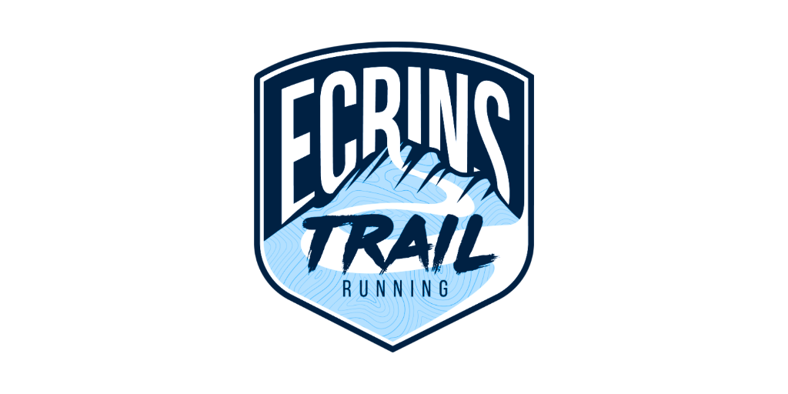

Inscriptions
Inscriptions
 Bénévoles
Bénévoles
 Communication
Communication
 Administratif
Administratif
L'outil tout-en-un
des organisateurs
d'événements sportifs.
De l'ouverture des inscriptions à la remise des résultats, Strayde centralise tout ce dont vous avez besoin pour organiser vos événements outdoor : inscriptions, bénévoles, communication et gestion administrative — au même endroit, sans jongler entre dix outils.

Trail Rouennais · En direct
21 inscrits · 4 bénévoles confirmés · 3 emails envoyés
4 modules actifs
tout centralisé
Gagnez du temps
avec Strayde.
Fini les tableurs Excel, les emails perdus et les outils éparpillés. Strayde regroupe les 4 piliers de l'organisation d'un événement sportif dans une interface unique et intuitive.
Gestion des inscriptions
Ouvrez vos inscriptions en quelques minutes. Formulaires personnalisés, catégories multiples et paiement sécurisé. Vos participants s'inscrivent en 2 minutes.
Thomas Martin · Trail 20km
Il y a 2 min · Payé 25€
Dossards vendus
842 / 1200
+12%
vs hier
Une plateforme pensée pour chaque acteur
Que vous organisiez une course de quartier ou un triathlon de 2 000 participants, Strayde s'adapte à votre contexte.
Je suis organisateur
Gérez l'intégralité de votre événement depuis un seul tableau de bord : inscriptions, bénévoles, communications, finances. Économisez des dizaines d'heures à chaque édition.
Démarrer gratuitementJe suis chronométreur
Accédez aux listes de départ, gérez les dossards et exportez vos données de timing. Une interface directement connectée aux inscriptions, sans double saisie.
En savoir plusJe suis participant
Trouvez votre prochaine course, inscrivez-vous en 2 minutes et retrouvez vos dossards, résultats et informations pratiques dans votre espace personnel.
Découvrir
Prêt à dire adieu aux tableurs Excel
et aux emails en pagaille ?
Strayde centralise tout ce qu'un organisateur fait au quotidien. En une seule plateforme.
Une plateforme qui a du sens,
pas juste un logiciel.
Strayde est né d'une conviction : organiser un événement sportif devrait être accessible à tous, des petits clubs aux grosses associations. On a construit la plateforme qu'on aurait voulu avoir — simple, humaine, et responsable.
Éco-conçue & responsable
Première plateforme d'organisation sportive éco-conçue, alimentée à l'énergie solaire. Parce que le sport outdoor et la nature vont de pair.
Un accompagnement humain
L'équipe Strayde vous répond en moins de 24h. Pas de chatbot, pas de FAQ labyrinthe — de vraies personnes passionnées par l'événementiel sportif.
Données souveraines
Toutes vos données et celles de vos participants sont hébergées en France. RGPD compliant, sans compromis.
Strayde en chiffres
1 200+
Organisateurs actifs
98%
Taux de satisfaction
4
Modules intégrés
<24h
Temps de réponse
Impact Green inclus
Ils nous font confiance
Des organisations de toutes tailles, partout en France



Tout ce que vous voulez savoir.
Strayde remplace-t-il vraiment tous mes outils actuels ?
Strayde remplace vos formulaires Google, vos tableaux Excel, vos outils d'emailing et vos échanges de fichiers par email. Tout est centralisé : inscriptions, bénévoles, communications et documents administratifs dans une seule interface.
Combien de temps faut-il pour créer son premier événement ?
Moins de 30 minutes pour un événement complet. La plateforme est pensée pour être prise en main sans formation : un assistant vous guide étape par étape (parcours, catégories, tarifs, formulaire). Notre équipe est disponible si besoin.
Est-ce adapté aux petites organisations ?
Absolument. Strayde est utilisé aussi bien par des clubs locaux qui organisent une course de quartier que par des structures professionnelles gérant des événements de 2 000 participants. La plateforme s'adapte à la taille de votre événement.
Comment fonctionne la gestion des bénévoles ?
Vous définissez vos postes et créneaux, partagez un lien de candidature, validez les bénévoles et affectez-les en un clic. La plateforme envoie automatiquement les confirmations, briefings et rappels. Plus aucun aller-retour par email.
Les données de mes participants sont-elles sécurisées ?
Oui. Toutes les données sont hébergées en France, sur des serveurs sécurisés. Strayde est entièrement conforme au RGPD. Vos participants ont un droit d'accès, de modification et de suppression de leurs données à tout moment.
Simplifiez votre prochain
événement avec Strayde.
Rejoignez 1 200 organisateurs qui ont dit adieu aux tableurs. Sans carte bancaire, sans engagement.